|
 |
 |
Puntos de
Inflexión Ecológica
- Cómo funcionan?
- Transformando círculos viciosos a círculos virtuosos
- Ingredientes para el éxito
- Elaboren sus propios Puntos de Inflexión Ecológica
Historias por Región
Historias por Tema
- Agricultura
- Agua y Cuencas
- Bosques
- Ecosistemas Urbanos
- Educación
- Energía
- Negocios
- Pesquerías
- Salud Pública
Videos Cortos
- Salvando un arrecife coral y una pesquería
(Filipinas) - Revitalizando vecindades urbanas con jardines comunitarios
(Nueva York) - Revirtiendo la deforestación tropical con bosques comunitarios
(Thailandia) - Rellenando aguas subterráneas con captación pluvial
(Rajastán, India) - Escapando la trampa de pesticidas
(India)
Explicando el Éxito
- Salvando un arrecife coral y una pesquería
(Filipinas) - Revitalizando vecindades urbanas con jardines comunitarios
(Nueva York) - Revirtiendo la deforestación tropical con bosques comunitarios
(Thailandia) - Rellenando aguas subterráneas con captación pluvial
(Rajastán, India) - Escapando la trampa de pesticidas
(India)

Ecología Humana: Presenta los principios de la ecología humana que sirven de fundamento a los Puntos de Inflexión Ecológica
México - Región de la Mixteca (Oaxaca) – Combatiendo la Desertificación con Reforestación Comunitaria y Agricultura Sustentable
- Autores: David Nuñez y Gerry Marten
La región conocida como La Mixteca, al noreste de la Ciudad de Oaxaca, parece un desierto, aunque en el pasado estuvo cubierta de bosques. El paisaje desolado y el proceso de desertificación son el resultado del mal uso que se le ha dado al suelo durante generaciones. Las causas que transformaron bosques en páramos son muchas y complejas. Algunos alegan que la sobre-explotación de los recursos naturales de la región se remonta a tiempos de los Aztecas, quienes exigían grandes tributos de la población Mixteca. Durante los siglos de colonización Española, la construcción de enormes misiones requirió de cantidades masivas de madera. Además se introdujo la ganadería caprina a este paisaje ya degradado. La zona se convirtió en un corredor para llevar cabras al mercado, y el pastoreo excesivo impidió la recuperación de los bosques talados para producir durmientes, para la expansión agrícola y para la producción de carbón vegetal (particularmente de encinos), que continúa siendo el principal combustible en las cocinas de las comunidades rurales de la región.
La degradación de siglos fue exacerbada durante la segunda mitad del siglo XX por las políticas agrarias del Gobierno Mexicano y las tecnologías de la Revolución Verde. La política gubernamental de únicamente ofrecer créditos para monocultivos casi terminó con la ancestral y sustentable milpa. Los monocultivos acabaron con la fertilidad de la tierra y la expusieron a la erosión. Con la Revolución Verde llegaron los fertilizantes químicos, los cuales mejoraron rendimientos, pero solo a corto plazo. La erosión y la degradación continuaron, obligando a los agricultores a utilizar cada vez más fertilizantes. El agotamiento de las tierras junto con los altos costos de los fertilizantes obligaron a agricultores a abandonar sus campos, expandiendo la agricultura a terrenos recién talados. La deforestación y la erosión se vieron aceleradas y actualmente la región sufre de uno de los índices de erosión más altos del planeta. Es también una de las regiones más pobres de México, incapaz de producir sus propios alimentos, y muestra una de las tasas de emigración más altas del país.
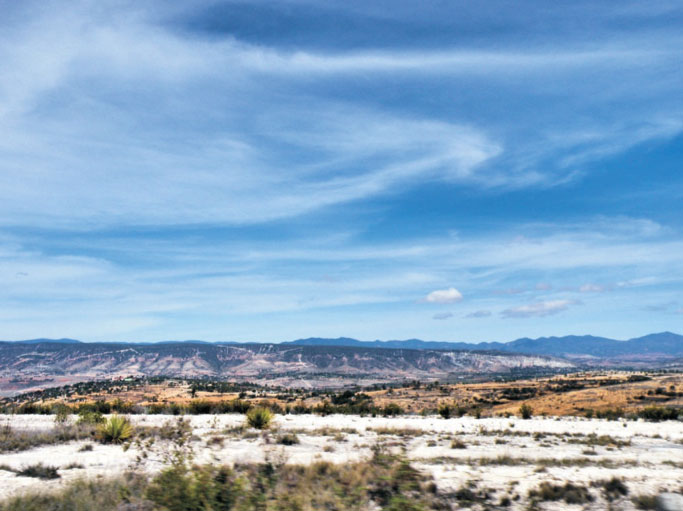
La deforestación y erosión crean la impresión de que la Mixteca Alta es un desierto
Soluciones
Pero recientemente esta región ha recibido atención internacional por hacer las cosas bien. En el 2008 Jesús León Santos y su Centro de Desarrollo Integral Campesino (CEDICAM) recibieron el premio Goldman por sus labores de reforestación, conservación de suelos y agricultura sustentable.
Su historia comienza a principios de los 1980s, cuando un grupo de refugiados Guatemaltecos que huían de la guerra civil en su país, llegaron a la Mixteca asistidos por la ONG Norteamericana Vecinos Mundiales. Preocupados por la erosión y desertificación, los Guatemaltecos compartieron sus prácticas de conservación de suelos y agricultura sustentable con la población local, con apoyo de la asociación civil Mexicana Centro para Tecnologías Apropiadas de México (CETAMEX).
Alfonso López López, campesino y actual presidente del CEDICAM, recuerda como su padre lo regañaba por “perder el tiempo con esos Guatemaltecos” y como tenía que escaparse en su motocicleta para asistir a sus talleres. Pero fueron precisamente estos extranjeros quienes pusieron en marcha el proceso de restauración de suelos y bosques al compartir sus experiencias, aunque al principio no fue fácil convencer a los lugareños.
Uno de los primeros éxitos fue el persuadir a algunos campesinos de sembrar el frijol en surcos, en vez de arrojarlo al azar. Con rendimientos hasta 5 veces mayor a los de sus vecinos, pronto convencieron a sus comunidades que lo que ofrecían los Guatemaltecos no era perder el tiempo. En 1988 la parroquia de Nochixtlan apoyó estos esfuerzos brindando oficinas. Sus catequistas ofrecieron educación de salud y nutrición junto al personal de CETAMEX en las comunidades rurales. Años después dos de estas mujeres se convirtieron en el primer personal femenino del CEDICAM.
Años después, al surgir problemas entre el personal y el liderazgo de CETAMEX, Vecinos Mundiales patrocinó la formación de una nueva organización campesina. Bajo el liderazgo de Jesús León Santos, estos campesinos juntaron sus ahorros para establecer su sede en un lote a las afueras de Nochixtlan, permitiéndoles evacuar las oficinas de la parroquia y así trabajar con mayor autonomía. Para el 1997 los campesinos habían formado una organización propia, el CEDICAM, completando así la transición. El CEDICAM expandió sus labores sobre tres ejes:
- reforestación y conservación de suelos
- agricultura sustentable
- nutrición y salud
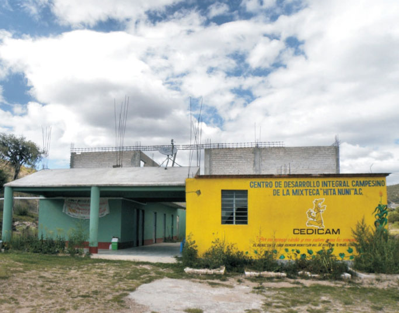
Instalaciones del Centro de Desarrollo Integral Campesino (CEDICAM) en Nochixtlán, Oaxaca
Agricultura Sustentable
La autosuficiencia alimentaria ha sido una preocupación central del CEDICAM. La Mixteca importa muchos de sus alimentos, pero las comunidades en las que trabaja el CEDICAM han mejorado el rendimiento de sus cosechas al grado que ahora no solo producen para la subsistencia, sino que venden el excedente en el mercado. Esto se ha logrado aplicando diversas técnicas:
- rescatando la agricultura tradicional de milpa;
- utilizando composta y abonos verdes como fertilizantes orgánicos;
- reduciendo la dependencia a los pesticidas químicos;
- seleccionando semillas para mejorar variedades de maíz;
- vendiendo sus productos como “orgánicos”.
La milpa es un sistema agrícola tradicional de policultivos complementarios. El arreglo más básico es el de calabaza, maíz y frijol. El maíz comienza a crecer cuando la calabaza comienza a morir. El frijol se enreda en los tallos del maíz y comienza a dar fruto cuando comienza a morir el maíz. Pueden incluirse muchos otros cultivos, por ejemplo, chiles, camotes, tomatillo y chayote. Esta combinación de cultivos ayuda a mantener la fertilidad de la tierra; es menos vulnerable a las plagas que azotan los monocultivos; y brinda una dieta más balanceada para la familia agrícola. Además de rescatar la milpa, se han construido invernaderos para cultivar verduras, permitiendo a las familias vender su excedente en el mercado.
El arado en esta empobrecida región aún se hace con bueyes. El CEDICAM promueve lo que llaman “arado Egipcio” que consiste en abrir la tierra sin voltearla. Esta técnica es de gran utilidad en paisajes semi-áridos, pues ayuda a reducir la erosión y conservar la humedad de la tierra al minimizar la evaporación de ésta.
Además se ha desarrollado un programa de manejo integral de residuos para producir abonos orgánicos. Antes el estiércol era mal aprovechado, pues simplemente se ataba al ganado en distintas parcelas para que cayera allí el estiércol. Al mantener al ganado en corrales de piso duro, el estiércol puede ser concentrado y composteado para producir fertilizantes de mayor calidad.
El método bokashi, importado del Japón, ha sido adaptado a las condiciones locales y produce composta de alta calidad en tan solo 2 ó 3 semanas. La clave del bokashi es la adición de levaduras que fermentan los desechos, y de azúcares que aceleran el proceso, generando altas temperaturas que maximizan la conversión.
La vermicomposta también ha sido introducida exitosamente, particularmente entre las mujeres que la utilizan en sus huertos e invernaderos. Además de usar la composta, el “jugo” de la vermicomposta es recolectado en botellas de plástico y así aplicado de manera individual a cada planta. Los agricultores evitan el gasto de la inversión en gusanos pidiendo prestado un kilogramo de gusanos del CEDICAM que pueden regresar hasta un año después.
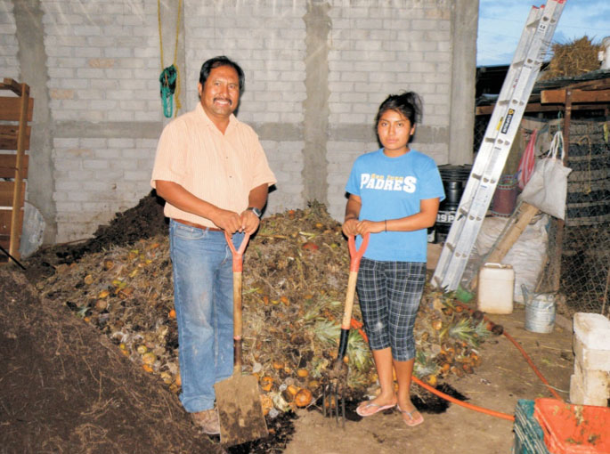
Jesús León Santos (fundador del CEDICAM) y su hija Diana frente a la composta de su rancho
Recientemente el CEDICAM ha empezado a promover el uso de “abonos verdes”, es decir de gramíneas y leguminosas que se incorporan a la tierra como fertilizante natural. Estos cultivos incluyen chícharos y habas, mostaza, trigo y centeno. Una mata conocida localmente como “trébol blanco” crece hasta en las tierras más pobres, pues mantiene una simbiosis con una bacteria que fija el nitrógeno atmosférico. Los “abonos verdes” cosechados en terrenos no aptos para la agricultura, pueden ser incorporados a las tierras agrícolas. Al principio tuvieron dificultad en incorporar los abonos verdes a la tierra, pues carecen de maquinaria de labranza y los bueyes no son aptos para la tarea. Pero ahora se utilizan podadoras para cortar las plantas, y se permite que se descompongan sobre el suelo. Esta cobertura además ayuda a mantener la humedad de la tierra.
Todos estas mejoras han permitido a los agricultores reducir y hasta eliminar su uso de fertilizantes químicos. Han logrado éxitos similares con los pesticidas, usando extractos de zempasúchil, ruda, chile y ajo, así como soluciones de jabón para repeler plagas. Un hongo edáfico (Beauveria bassiana) y patógeno para insectos también ha sido reclutado como agente biológico para combatir plagas de insectos. Las esporas pueden ser aplicadas a los cultivos ya sea en solución o en polvo, aunque debe tenerse cuidado de no tratar las flores para evitar infectar a insectos polinizadores. Estos métodos naturales han permitido a los agricultores reducir y hasta eliminar el uso de pesticidas químicos, permitiéndoles vender sus cosechas como “orgánicas”.
Otro importante aspecto de la agricultura sustentable es la selección de semillas, particularmente con respecto al maíz, y en esto las comunidades servidas por el CEDICAM han sido muy exitosas. México es la cuna del maíz y en Oaxaca encontramos decenas de variedades locales de distintos colores, tamaños, y usos. El CEDICAM ha sido instrumental en enseñar a los campesinos como lograr mejores rendimientos a través de la selección de las mejores semillas. Las plantas se escogen del centro de la parcela, para evitar contaminación genética de parcelas vecinas. Los criterios de selección incluyen:
- resistencia a sequías, heladas, plagas, enfermedades y al encamado;
- productividad (número de mazorcas y granos, tamaño de mazorcas y granos);
- uso final (para comer fresco, para molienda o para alimentar ganado).
Las semillas seleccionadas son plantadas aparte, y se hace una segunda ronda de selección, buscando las mazorcas más grandes y saludable (es decir, sin daños causados por insectos o enfermedades) que tengan por lo menos 12 hileras rectas de granos. De esta manera cada granja es un laboratorio viviente en que las variedades son adaptadas al clima, la tierra y las preferencias culturales, logrando mejoras continuas. Con la selección y cuidado adecuados, las variedades locales son tan productivas como las semillas híbridas importadas. Se utilizan botellas de plástico recicladas para almacenar estas semillas, permitiendo a cada agricultor tener su propio banco de semillas y protegerlo de plagas. Estas variedades son compartidas e intercambiadas en una red informal de mercados y ferias.
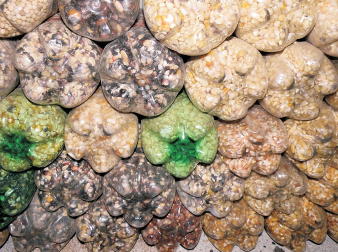
Semillero (maíz)
Todos estos logros se han logrado a través de un programa íntegro de capacitación llamado “Campesino a Campesino” en el cual se demuestra con el ejemplo y convence con resultados. Desde sus inicios el CEDICAM decidió ser una organización campesina y se excluyeron de manera deliberada a ingenieros agrónomos y demás “expertos” debido a experiencias negativas previas con funcionarios de gobierno.
Trabajando de manera horizontal y compartiendo el trabajo, se convence a los campesinos de dedicar una sección de sus tierras a las nuevas técnicas, para poder realizar comparaciones de “antes y después”. Inspirados por los mejores rendimientos, los ahorros y una vida mejor, los agricultores más exitosos son reclutados para que compartan sus experiencias con sus vecinos. Esta labor la realizan dos tipos de trabajadores: los promotores y los facilitadores. Los promotores tienen su propia parcela modelo y participan en reuniones, talleres y sesiones de capacitación. Los facilitadores identifican a posibles promotores, ofrecen apoyo logístico para reuniones y talleres, y buscan y generan materiales educativos. De esta manera el CEDICAM guía con el ejemplo, a través de su constante presencia en las comunidades, compartiendo las dificultades tanto como las dichas. Tiene presencia permanente en 12 comunidades agrícolas y acuerdos más informales con otras 30.
Conservación de Suelos
Por impresionantes que sean estos logros, lo que meritado atención internacional han sido los esfuerzos del CEDICAM para combatir la erosión. Esta batalla se ha librado sobre dos frentes: la conservación de suelos y la reforestación.
La construcción de zanjas trincheras en laderas es uno de sus proyectos más visibles y eficaces. Las zanjas cumplen una doble función: retener aguas pluviales y prevenir la erosión. Capturan las lluvias que fluyen hacía valles, filtrando el agua hacia el manto acuífero, permitiendo que riegue cultivos cuenca abajo. Las zanjas también evitan la erosión del mantillo, porque reducen el flujo de las aguas y porque capturan la tierra deslavada en la trinchera. La construcción de estas zanjas es una labor enorme, requiriendo de muchísima mano de obra.
Cada sección de un metro de trinchera que mide 60 cm de ancho y tiene 60 cm de profundidad puede captar hasta 360 litros cuando llueve. Cada año se construyen decenas de kilómetros de zanjas, y hasta la fecha se han construido cientos. Las zanjas se trazan utilizando un dispositivo llamado “aparato A”, introducido por los Guatemaltecos. Consta de dos largas varas unidas en sus extremos formando una “A” con la que se marcan los niveles en la ladera. En un principio las zanjas fueron hechas a mano, dependiendo de la tradición indígena de trabajo comunitario, o tequio, en que todos los miembros de la comunidad participan.
El éxito de las zanjas se hizo evidente pronto en la recuperación de manantiales y arroyos previamente secos, y en el nacimiento de nuevas aguas. Ahora el gobierno federal, a través de la Comisión Nacional Forestal (CONAFOR), ha adoptado esta práctica y construye las zanjas con maquinaria pesada. El éxito logrado con este proyecto inspiró al CEDICAM a implementar otros proyectos de conservación de agua, como son la construcción de cisternas para agua pluvial que riegan sus invernaderos.
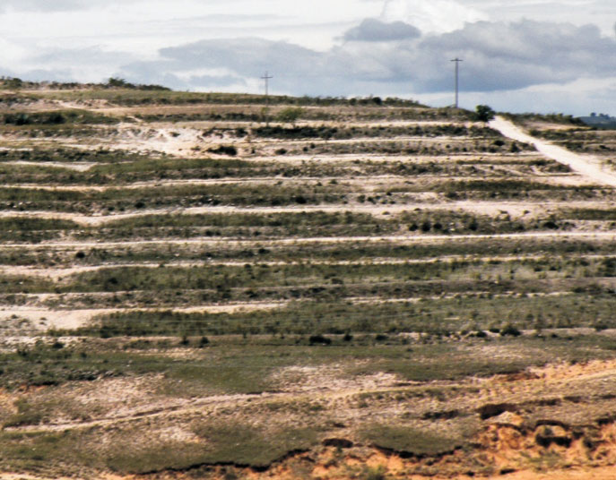
Sistemas de zanjas trincheras para captación de lluvia y suelo sobre una ladera en Telantongo, Oaxaca
Reforestación
Aún más impresionante ha sido su proyecto de reforestación. Mientras que los demás proyectos del CEDICAM tuvieron beneficios obvios e inmediatos, la reforestación es un proyecto a largo plazo que requiere de más fe. Cuando comenzaron hubo mucha resistencia, debido a que los árboles tardan muchos años en crecer. No fue fácil convencer a la gente de invertir su tiempo y esfuerzo en un proyecto que quizá jamás les beneficie directamente. Algunos estaban dispuestos a plantar árboles frutales, pero nada más. Al principio los pocos que participaron plantaron uno o dos árboles, quizá hasta cinco. Pero con el tiempo la disponibilidad de leña, de las ramas, fue clave para convencer a la población que valía la pena sembrar árboles que no son frutales.
Careciendo de experiencia previa cultivando árboles, el CEDICAM procedió de manera empírica, y hubo tropiezos en el camino. Al principio se sembraron eucaliptos y casuarinas, árboles mal adaptados a los suelos y clima de la Mixteca, por ser estas las especies ofrecidas por los viveros de la CONAFOR. Siguiendo el consejo de Angel Roldan, fundador del CETAMEX, buscaron especies nativas a la región y se decidieron por un pino (Pinus oaxacana) y un aliso llamado elite (Alnus acuminata). Se visitaron viveros para aprender de ellos antes de establecer su propio vivero, que actualmente produce más de 30,000 arbolitos cada año. El CEDICAM calcula que hasta la fecha han sembrado más de 4 millones de árboles.
Este pino y aliso nativos crecen rápido. El elite es impresionante porque fija nitrógeno atmosférico y crece hasta en las tierras más pobres. Es un excelente mejorador de suelos, pues su hojarasca regresa mucha materia orgánica rica en nitrógeno al suelo. En una arboleda de elites de 20 años de edad pudimos escarbar hasta 20-30 cm de profundidad en tierra negra y húmeda, mientras que a unos pocos metros no había más que piedra.
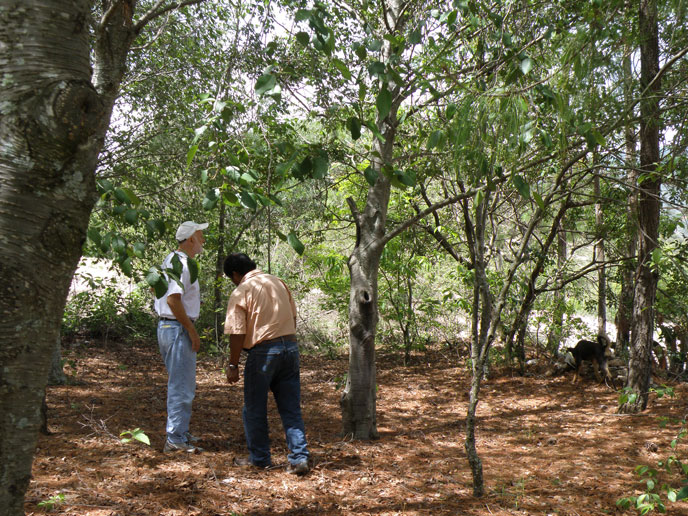
Gerry Marten revisa una arboleda de elite (Alnus acuminata) plantada hace 20 años. Fíjese en el suelo pelado del trasfondo al margen de la arboleda.
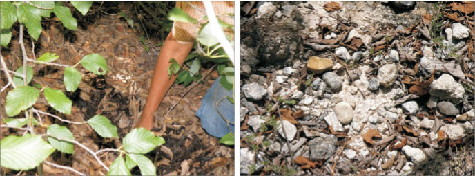
Izquierda: Tierra nueva bajo un elite (Alnus acuminata), formado por la hojarasca del árbol
Derecha: Suelo “normal” erosionado, unos pocos metros fuera del bosquecillo del elite
Debido a que crecen tan rápido estos árboles, sus ramas pueden ser cortadas para leña sin dañar al árbol. Este fue quizá el aspecto más convincente del proyecto de reforestación para los lugareños, ya que anteriormente tenían que viajar largas distancias en busca de leña cada vez más escasa. Ahora estas comunidades cuentan con una fuente de leña sustentable cercana a sus casas, haciendo innecesaria la labor de seguir talando los escasos bosques de la región. Para reducir la demanda de leña, el CEDICAM además promueve el uso de hornos ahorradores de leña, que además han mejorado la salud familiar al reducir la inhalación de humo en las cocinas (véase la historia sobre la estufa Patsari).
Para que la reforestación fuera exitosa, fue necesario excluir a las cabras de las zonas reforestadas, cosa que no agradó a los dueños de ganado caprino. Pero basándose en sus experiencias y éxitos previos, lograron llegar a acuerdos, y poco a poco se han sustituido las cabras por ovejas, cuyo pastoreo es más selectivo y menos destructivo.
Un inconveniente de estos árboles de crecimiento rápido es que por lo mismo tienen vidas cortas. Los primeros árboles, plantados a mediados de los 1980s, comienzan a morir. Esto sugiere la necesidad de diversificar la reforestación con otras especies de crecimiento más lento. Lo bueno es que también ya pueden apreciarse árboles donde nunca se plantaron, lo cual implica que la naturaleza comienza a hacerse cargo de la propagación de semillas. Aunque la reforestación será un proceso largo, los primeros pasos han sido suficientemente exitosos para inspirar esfuerzos continuos de expansión del proyecto.
Impacto Social
Los proyectos del CEDICAM han mejorado la condición de las mujeres de la región. Al principio ni siquiera se les permitía participar en los talleres, pero ahora realizan un papel importante en todas las actividades del CEDICAM, incluso en la organización comunitaria y en la asistencia técnica a los campesinos. El cambio se dio en parte debido a presión por parte de donantes internacionales interesados en la equidad de género, pero más bien fue una respuesta a la realidad en estas comunidades, donde los altos niveles de emigración de hombres han obligado a las mujeres a una participación más activa en las actividades económicas.
Estas comunidades también han experimentado un cambio en la manera en que se ordena el uso de suelos. Las tierras comunes (o ejidos) en México comúnmente están divididas en parcelas de uso familiar. Las áreas comunes no aptas para la agricultura se utilizan para el pastoreo, recolección de leña y producción de carbón vegetal. Estas zonas comunes son particularmente vulnerables a la “tragedia de los bienes comunes”, y como consecuencia de la labor del CEDICAM han surgido planes de ordenamiento y reglamentos de uso de suelo en comunidades donde antes no existían este tipo de reglas. Las reglas se deciden en asambleas comunitarias, y algunos ejemplos son la prohibición de la producción de carbón vegetal a partir de encinos, la prohibición del pastoreo en zonas reforestadas, y la imposición de multas a los infractores.
Las lecciones
Un aspecto evidente de la transición de la degradación hacia la restauración ha sido la conversión de círculos viciosos en círculos virtuosos. Aunque las causas del deterioro ambiental en la Mixteca son complejas, podemos identificar la identificación del ganado caprino a un ecosistema ya frágil como el “punto de inflexión negativa” que puso en marcha el deterioro. Fue el sobrepastoreo por parte de cabras que interrumpió los poderes regeneradores de la naturaleza, poniendo en marcha un círculo vicioso en que la tierra era degradada hasta ser incapaz de soportar otra actividad, por lo que se expandió el pastoreo, causando mayor degradación. Las políticas agrícolas del gobierno y el uso de fertilizantes químicos fueron respuestas a la crisis de erosión, degradación y deforestación, que resultaron ser contraproducentes a largo plazo.
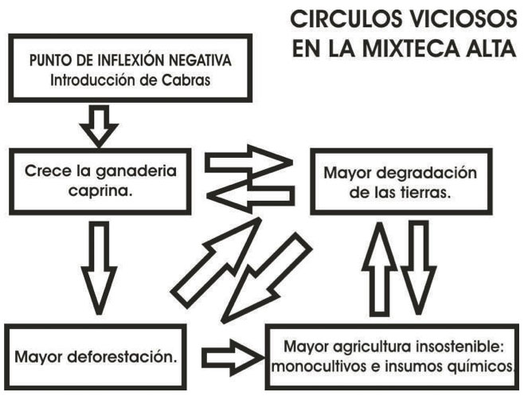
Podemos identificar a los refugiados Guatemaltecos- particularmente sus consejos con respecto a la agricultura y la conservación de suelos, y el apoyo de Vecinos Mundiales y el CETAMEX- como el punto de inflexión positiva que puso en marcha el proceso gradual de restauración ambiental y recuperación agrícola. La demostración de rendimientos mayores al plantar el frijol en surcos fue el primer paso hacia la autosuficiencia alimentaria. Esto inspiró a los campesinos a implementar proyectos de conservación de suelos (las zanjas trincheras) y a plantar árboles, revirtiendo el círculo vicioso de degradación de tierras. El círculo vicioso fue transformado en círculo virtuoso, y las fuerzas sociales y ambientales que impulsaban el deterioro se convirtieron en el motor de la restauración. Los éxitos logrados dieron a la población la experiencia y confianza para iniciar otros proyectos para mejorar el manejo de sus residuos, la fertilidad de sus tierras, la integridad de su paisaje, su dieta, y su calidad de vida.
¿Como fue que el CEDICAM logró hacer esto? ¿Cuáles fueron los ingredientes de su éxito? Su historia demuestra los mismos ingredientes clave tan evidentes en otras historias exitosas.
Estímulo y Facilitación Externa. Las historias exitosas típicamente comienzan cuando gente foránea a una comunidad impulsan una actividad o conciencia comunitaria con respecto a su problemática, analizando el porqué de su situación y brindando nuevas ideas y acciones posibles. Los refugiados Guatemaltecos mostraron a los campesinos Mixtecos una manera distinta de hacer las cosas, inspirándolos a enfrentar sus problemas. Mientras que los logros del CEDICAM se deben en gran parte a la gente y recursos de los lugareños, también ha sido importante la asistencia financiera y técnica de organizaciones ajenas a la región, como son las ONGs (organizaciones no-gubernamentales) internacionales Pan para el Mundo, Catholic Relief Services, Maryknoll y el Club Rotario.
Fuertes instituciones democráticas y liderazgo comprometido. Las experiencias en la Mixteca de Oaxaca demuestran como los cambios duraderos pueden surgir desde las bases de la sociedad. No han sido implementadas por políticas gubernamentales, sino logradas a través de la auto-evaluación, la creatividad, el consenso y la mano de obra de una comunidad independiente haciendo el mejor uso posible de sus recursos. La fortaleza de las instituciones democráticas en las comunidades indígenas de la Mixteca les han permitido emprender proyectos concebidos y apoyados por la misma gente que debe implementarlos. El tradicional sistema de servicio comunitario conocido como tequio es una expresión notable de esta democracia comunitaria. Fundamentados en esta pujante participación comunitaria, los éxitos del CEDICAM son fruto del compromiso y trabajo continuo de Jesús León Santos y sus colegas.
Coadaptación entre el sistema social y el ecosistema. El éxito depende de tecnologías adecuadas al ambiente local y de la organización social correspondiente necesaria para su aplicación efectiva. Los logros ambientales y sociales van de la mano Además del tequio, que se adaptó tan fácilmente al rescate del paisaje y de la agricultura tradicional, en las comunidades donde labora el CEDICAM encontramos otras instituciones sociales que evolucionaron con el proyecto. Una es la metodología “Campesino a Campesino” que busca capacitar a vecinos tratándolos como iguales. Este enfoque contrasta con estrategias gubernamentales que frecuentemente buscan imponer soluciones desde arriba, soluciones que no solo fracasan, sino que frecuentemente son contraproducentes. Otra importante adaptación social ha sido el cambio en la condición de las mujeres y en la valoración del trabajo de la mujer. Con respecto a la adaptación del ecosistema, la tierra ha respondido de manera positiva a la reforestación y a los cambios en las prácticas agrícolas. Los rendimientos mayores son la respuesta más obvia del ecosistema, pero la fertilidad de la tierra también es mejorada donde los cultivos se mezclan y rotan.
“Permitir que la Naturaleza haga el trabajo”. La fiscalización del medio ambiente está más allá de la capacidad humana. La resolución de problemas ambientales depende necesariamente de la capacidad regeneradora de la naturaleza. En la Mixteca, comienzan a crecer árboles donde nunca se plantaron. Han resucitado arroyos y manantiales previamente secos. La producción de abonos naturales redujo la necesidad de fertilizantes químicos, y la naturaleza misma es la que mantiene la fertilidad de las tierras. El sistema agrícola de la milpa es sustentable porque el policultivo imita la naturaleza
La transformación de desechos en recursos. Lo que aparenta ser “desecho”- como la tierra infértil, edificios abandonados, la basura, o incluso gente marginada- puede ser transformada en valioso recurso social o material. Dado que la Mixteca es una región tan pobre, el CEDICAM no tuvo otra opción que hacer el mejor uso de cualquier recurso disponible. Han reciclado desechos orgánicos, convirtiéndolos en fertilizantes naturales. Por definición los refugiados son gente no apreciada en su tierra natal, son de cierta forma “gente desechada” que en este caso fueron valorados y apreciados por su tierra adoptiva.
Resultados rápidos. Cuando los esfuerzos de una comunidad logran resultados rápidos, se amarra el compromiso al proyecto. Una vez que los resultados positivos se difunden por la comunidad y el medio ambiente, los procesos cotidianos sociales, económicos y políticos se encargan de reforzar estos beneficios. Para los agricultores de la Mixteca el mayor rendimiento logrado al sembrar el frijol en surcos dio resultados tangibles en pocos meses, sugiriendo que con la experimentación prudente podrían mejorar su vida. La construcción de zanjas trincheras también tuvo efectos dramáticos en poco tiempo, al resucitarse manantiales secos. Los beneficios de la reforestación se dan más lentamente, pero el entusiasmo por el proyecto creció al darse cuenta que ya no tenían que viajar largas distancias en busca de leña.
Un símbolo poderoso. Los símbolos pueden consolidar la acción comunitaria. En el caso de la experiencia Mixteca, la autosuficiencia alimentaria puede considerarse un símbolo poderoso porque resume de manera precia el porqué de todos estos cambios. Los mayores rendimientos agrícolas no solo han mejorado la dieta familiar, sino la economía regional. La autosuficiencia alimentaria es motivo de orgullo, y el renacimiento agrícola comienza a ofrecer oportunidades a los jóvenes que antaño no tenían otra más que emigrar en busca de empleo. Quizá los símbolos más importantes de transformación cultural son los que dan esperanza y orgullo a comunidades que antes no conocían más que la desesperación. En una tierra que “no daba ni espinas”, Jesús León Santos llamó nuestra atención al cantar de los pájaros, comentando que en su juventud jamás se escuchaban. Para nosotros este es el símbolo perfecto de la renovación de la Mixteca.
La Superación de Obstáculos Sociales. La complejidad social actual puede presentar obstáculos al cambio positivos. La experiencia de la Mixteca nos brinda ejemplos de cómo se superaron esos obstáculos.
- El sistema tradicional de trabajo comunitario, o tequio, resuelve un problema que encontramos en todos lados- el hecho de que la gente “no tiene tiempo” de apoyar causas sociales o ambientales.
- El CEDICAM también superó obstáculos que surgen cuando un grupo de gente se siente amenazada por el cambio. Por ejemplo, al comienzo de la reforestación fue necesario satisfacer las inquietudes de los dueños de cabras quienes objetaron a que se les prohibiera el pastoreo en ciertas zonas para proteger arbolitos.
- El CEDICAM ha evitado involucrarse en los conflictos políticos y religiosos tan comunes en Oaxaca gracias a una política neutra.
- La autonomía de las comunidades indígenas de la región les ha permitido proceder a su manera, independientemente de las disfunciones predominantes en la sociedad moderna en general.
- La autosuficiencia va de la mano de la autonomía. Aunque el apoyo financiero externo ha sido significativo, el CEDICAM sigue una agrupación campesina que está transformando sus comunidades y dando ejemplo a su país, y al mundo, de cómo hacer las cosas sin depender de recursos externos.
Diversidad Social y Ambiental. A mayor diversidad, mayores opciones, y mayor probabilidad de que algunas de esas opciones sean buenas.
- Aceptando a los Guatemaltecos y siguiendo su ejemplo, las comunidades Mixtecas incrementaron su diversidad social.
- El CEDICAM trabaja con dependencias de gobierno y colabora con universidades Mexicanas e internacionales.
- Las mujeres en estas comunidades desarrollaron mayor diversidad de responsabilidades
Todas estas experiencias han expandido el universo social y la diversidad de opciones en la Mixteca.
Memoria Social y Ambiental. El pasado puede ser una importante fuente de diversidad. Aunque algunas técnicas utilizadas por el CEDICAM fueron introducidas, no todas son nuevas. Son prácticas tradicionales que han demostrado su validez y valor a través de los siglos. Fueron olvidadas y ahora se están recuperando. Aunque la Mixteca parece ser un páramo, es capaz de producir alimentos y crecer bosques con el cuidado indicado. Esta capacidad productiva no se había perdido, sino olvidado y también está siendo recordada con el cuidado debido. Al revivir la tradicional milpa de policultivos se recuperó la diversidad de cultivos que se había perdido con los monocultivos. Con respecto a la reforestación, los árboles nativos reflejan una memoria evolutiva que brindó las especies apropiadas a las condiciones locales, tras haber fracasado los esfuerzos con especies exóticas.
Construyendo Resiliencia. La resiliencia es la habilidad de aguantar sorpresas inesperadas y amenazantes. Es fundamental para asegurar los logros de la restauración social y ambiental. La clave de la resiliencia es la capacidad adaptativa. Los fundadores del CEDICAM comenzaron a construir una cultura resiliente cuando respondieron a la salida del CETAMEX formando su propia organización. Desde entonces han desarrollado una estrategia que fomenta resiliencia a cada paso. La diversidad de cultivos incremente la seguridad alimentaria, mismo que hace la conservación de suelos. Los altos índices de emigración, particularmente de hombres jóvenes, pudo haber trabado los esfuerzos de cambio, pero las mujeres llenaron el vacío, aportando su mano de obra. El éxito genera éxito. La organización, experiencia y orgullo de estas comunidades han fortalecido su capacidad de adaptación e innovación para responder a amenazas futuras. Con su dedicación, inteligencia y generosidad, la gente de la Mixteca nos seguirá inspirando durante mucho tiempo.
Agradecimientos
Jesus Leon Santos, y a su familia por mostrarnos la región y su trabajo; a Alfonso Eugenio Lopez Lopez, actual presidente del CEDICAM y a Pedro Velasco Cruz, Facilitador del mismo por su tiempo; y al resto del personal del CEDICAM por trabajar en los proyectos que pudimos conocer.
Referencias
- Vecinos Mundiales
http://www.wn.org/site/c.coIELNOsGpF/b.3889381/apps/s/content.asp?ct=5364013 - Premio Goldman
http://www.goldmanprize.org/2008/northamerica - La Jornada
http://www.jornada.unam.mx/2008/04/13/index.php?section=sociedad&article=036n1soc - Agencia Latinoamericana de Información Website
http://alainet.org/active/13887&lang=es - Resilience Science
http://rs.resalliance.org/2008/05/13/using-local-ecological-knowledge-to-rebuild-ecological-infrastructure/ - New York Times
http://www.nytimes.com/2008/05/13/world/americas/13oaxaca.html?_r=1&scp=1&sq=tilantongo&st=cse - The Center for Ecoliteracy
http://www.ecoliteracy.org/essays/goldman-prize-speech
http://www.ecoliteracy.org/profiles/jes%C3%BAs-le%C3%B3n-santos - Proceso
http://www.proceso.com.mx/rv/modHome/detalleExclusiva/58512
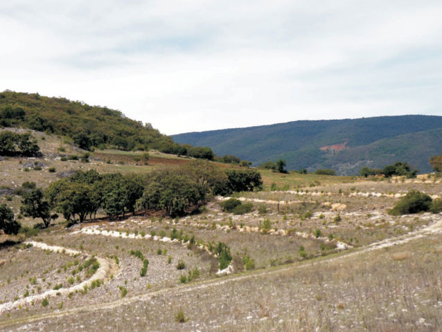
Zanjas trincheras y reforestación
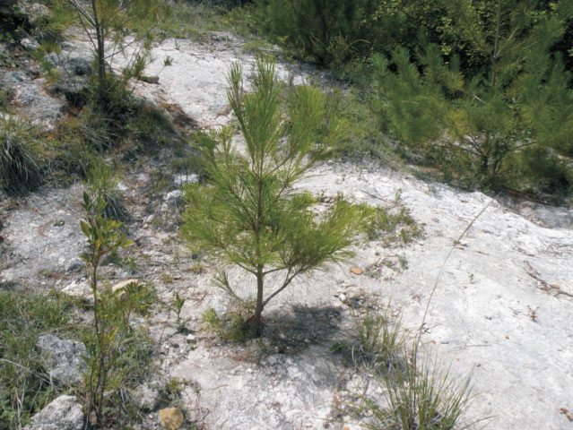
Arbolito creciendo en suelo totalmente erosionado
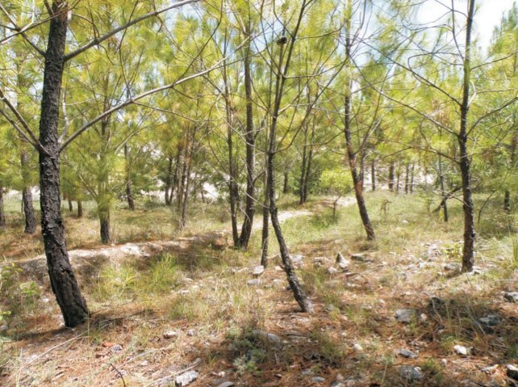
Ocotes (Pinus oaxacana) y zanja trinchera
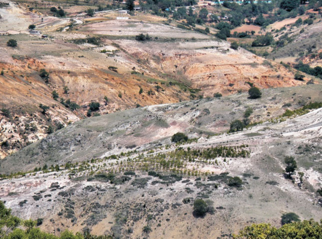
Reforestación en terreno altamente erosionado
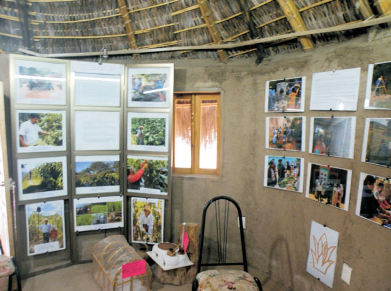
Museo del CEDICAM
Este sitio web contiene materia traducida del sitio web www.ecotippingpoints.org.
Traducción: David Nuñez. Redacción: Gerry Marten